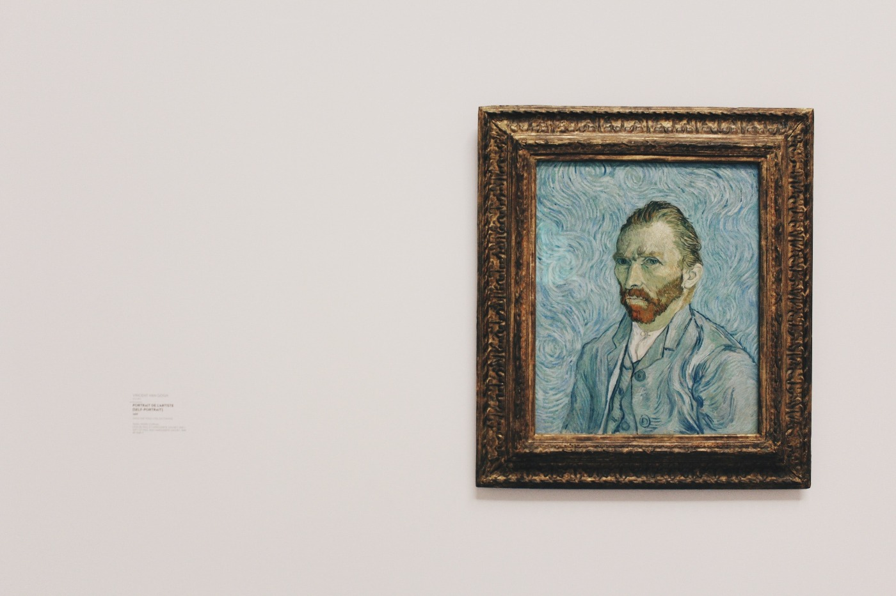
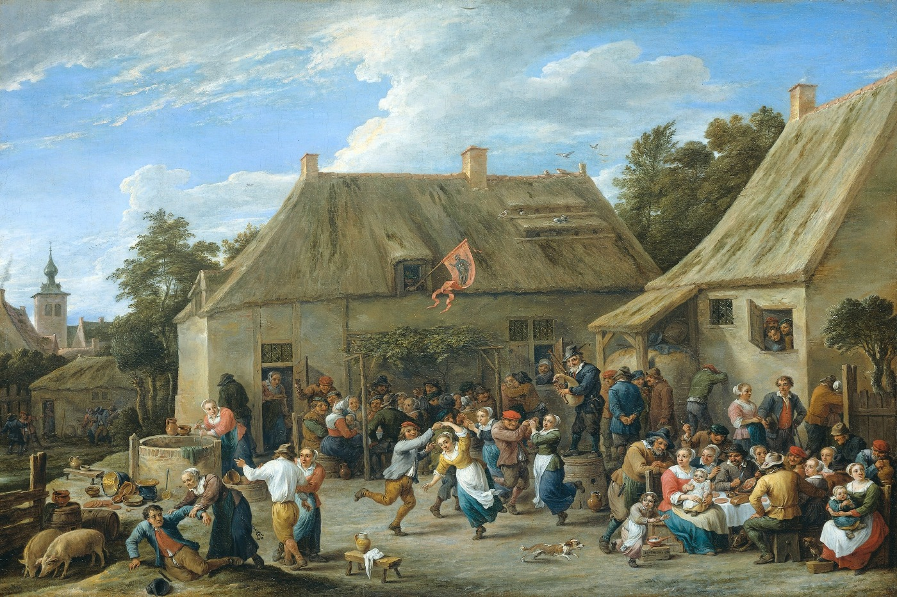
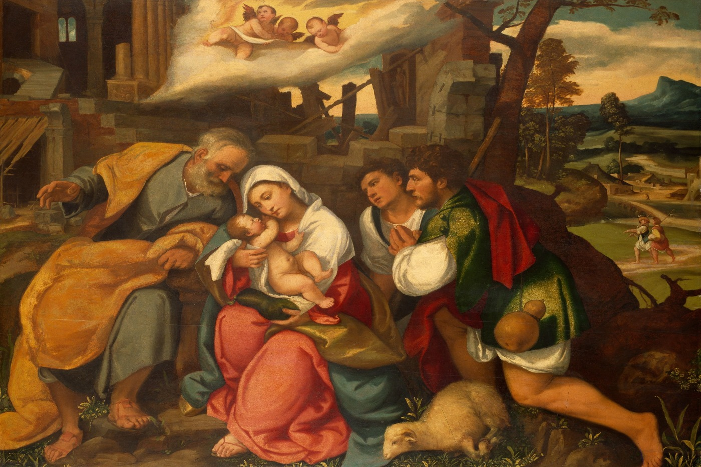
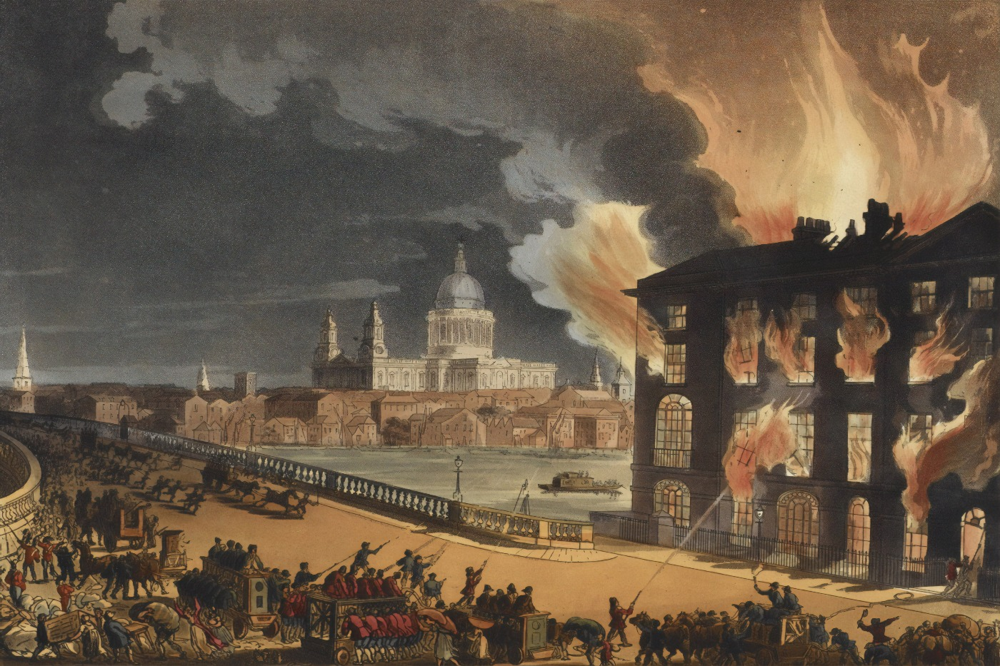

Постоянство памяти
 Tair Askat ( Redactor )
May 2, 2020
Tair Askat ( Redactor )
May 2, 2020
Этот мир прекрасен и ужасен одновременно и как неудивительно люди хотят передать красу вселенной и холстом, и словом. Но есть вещи которые ни в сказке сказать ни пером описать.

Нам известны художники,которые не просто рисовали, а передавали свои чувства через краску и кисть. На самом деле эти обычные деревяшка и краски открывают двери во многие направления жизни. Рисуя картины, эти люди познавали жизнь, являлись и философами, и романтиками. Многие услышав слово художник вспоминают Микеланджело, Донателло, Леонардо да Винчи, но нельзя забывать и про художников с ближнего востока таких как принцесса Фахр эн-Нисса Зейд, Махмуд Саид, Омар Эль-Нагди. Так как это художественные работы лучше посмотрите на картины, подумайте. Чувства, эмоции в картинах поймет лишь настоящий ценитель искусства.


